论用于此后证明的最初比和最终比方法
引理Ⅰ
诸量以及量的比，它们在任何有限的时间不断地趋于相等，在时间结束之前，其中一个与另一个比任意给定的差更接近，最终它们成为相等．
如果你否认，则它们最终不相等，又设它们最终的差为D.所以，对于相等性它们就不能比给定的差D更为接近，这与假设相反．
引理Ⅱ
如果在终止于直线Aa，AE和曲线acE的任意图形AacE中，内接任意数目的平行四边形Ab、Bc、Cd，等等，它们由相等的底AB、BC、CD，等等，与图形的边Aa平行的边Bb、Cc、Dd，等等所包含；并补足平行四边形aKbl、bLcm、cMdn，等等．那么，如果平行四边形的宽度减小且其数目增加以至无穷；我说：内接图形AKbLcMdD，外接图形以及曲线形AabcdE彼此之间的比，是等量之比．
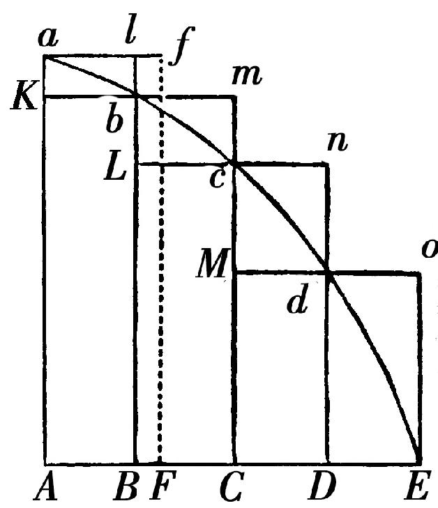
因为内接图形和外接图形之差是平行四边形Kl，Lm，Mn，Do的和，这就是（由于所有的底相等）一个底Kb和高的和Aa之下的矩形，亦即，矩形ABla.但这个矩形，因为假设其宽度AB无限减小，变得小于任何给定的空间．所以（由引理Ⅰ），内接图形和外接图形，并且居于它们中间的曲线形最终相等．此即所证．
引理Ⅲ
当平行四边形的宽度AB、BC、DC，等不相等，但都减小以至无穷，同样的最终比也是等量之比．
因为设AF等于最大宽度，并补足平行四边形FAaf.这个平行四边形大于内接图形和外接图形之差；但由于它的宽度AF被减小它将变得小于任意给定的矩形．此即所证．
系理1 因此，那些正消失的平行四边形的最终和与曲线形的所有部分重合．
系理2 并且直线形，它被将要消失的弧ab、bc、cd等的弦包围，最终与曲线形重合．
系理3 外接直线形，当被相同的弧的切线包围时是一样的．
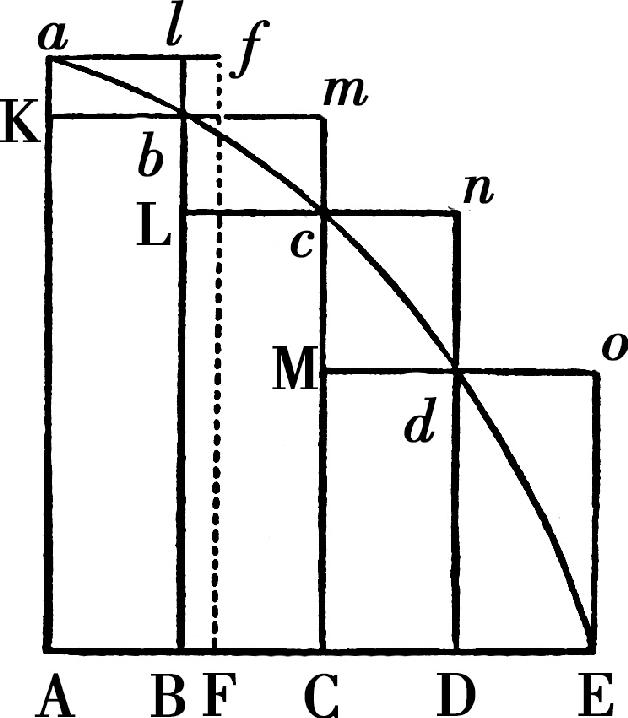
系理4 因此，这些最终的图形（相对于周线E）不再是直线形，而是直线形的曲线形极限．
引理Ⅳ
如果在两个图形AacE、PprT中，内接（如同上面）两组平行四边形，二者数目一样，且当宽度减小以至无穷时，一个图形中的平行四边形比另一个图形中的平行四边形的最终比，一个对一个，是相同的；我说：这两个图形AacE、PprT彼此按照那个相同的比．
因为［在一个图形中的］一个平行四边形比［在另一个图形中对应的］一个平行四边形，如同（由复合）［在一个图形中所有平行四边形的］和比［在另一个图形中所有平行四边形的］和，并且如同一个图形比另一个图形；因为前一图形（由引理Ⅲ）比前一和以及后一图形比后一和，按照等量之比．此即所证．
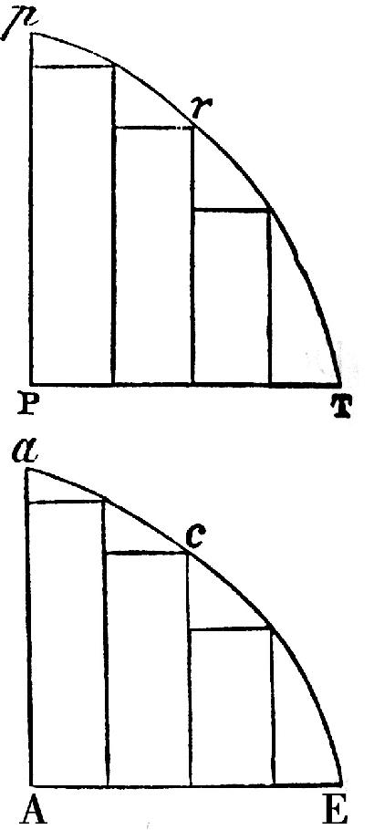
系理 因此，如果两种任意类型的量按同样的份数被任意划分，那些部分在数目增加且它们的大小减小以至无穷时，彼此之间保持给定的比，第一个对第一个，第二个对第二个，其余的按顺序对其余的：则整个部分彼此之间按照那个相同的给定的比．因为，如果在这个引理的图形中，平行四边形被取得彼此如同［量的］部分，则部分之和总如同矩形之和；因此，当部分及平行四边形的数目增加且大小减小以至无穷时，部分和将按照［一个图形中的］平行四边形比［另一个图形中的］平行四边形的最终比，亦即（由假设）将按照［一个量中的］部分比［另一个量中的］部分的最终比．
引理Ⅴ
诸相似形的所有类型的对应边，无论是直线或是曲线，成比例：则面积按照边的二次比．
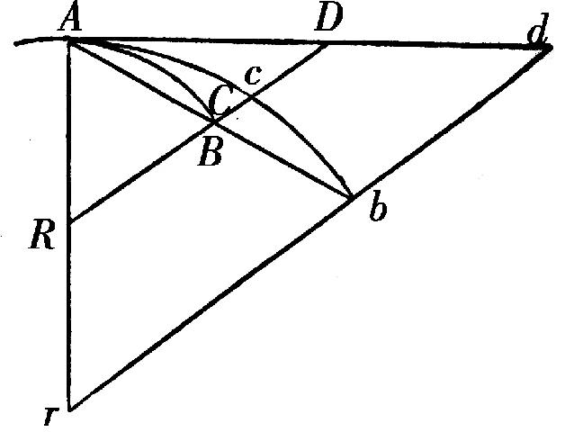
引理Ⅵ
如果位置给定的任意弧ACB所对的弦为AB，且在任意点A，它在连续的曲率中间，被沿两个方向延伸的一条直线AD相切；此后，如果点A，B彼此靠近并重合；我说：角BAD，它被包含在弦和切线之间，被减小以至无穷并最终消失．
因为如果那个角不消失，弧ACB和切线AD所含的角等于一个直线角，所以曲率在点A不连续，与假设相悖．
引理Ⅶ
在同样的假设下，我说：弧，弦和切线彼此的最终比是等量之比．
因为当点B靠近点A时，总认为AB和AD延长到在远处的点b和d，引bd平行于截段BD.又，弧Acb总相似于弧ACB.那么，假设点A，B重合，由上一引理，角dAb消失；因此直线Ab，Ad［它们总是有限的］和居于它们中间的弧Acb重合，且成为相等．因此，直线AB，AD，和居于它们中间的弧ACB（它们总与前者成比例）将消失，且最终获得等量之比．此即所证．
系理1 因此，如果通过B引平行于切线的［直线］BF与过A的任意直线交于F，这条线BF与消失的弧ACB的最终比为等量之比，因为，如果补足平行四边形AFBD，BF比AD总是等量之比．
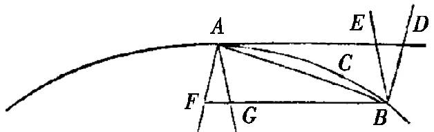
系理2 如果通过B和A引另外的直线BE，BD，AF和AG与切线AD及其平行线BF相截，则所有线段AD，AE，BF和BG以及弦AB与弧AB彼此的最终比为等量之比．
系理3 因此，在关于最终比的论证中，我们自由地用一个代替另一个．
引理Ⅷ
如果直线AR和BR以及弧ACB，弦AB和切线AD构成三个三角形RAB，RACB和RAD，而且点A和B靠近并相遇；我说：这些三角形在它们消失时的最终形状相似，并且它们的最终比为等量之比．
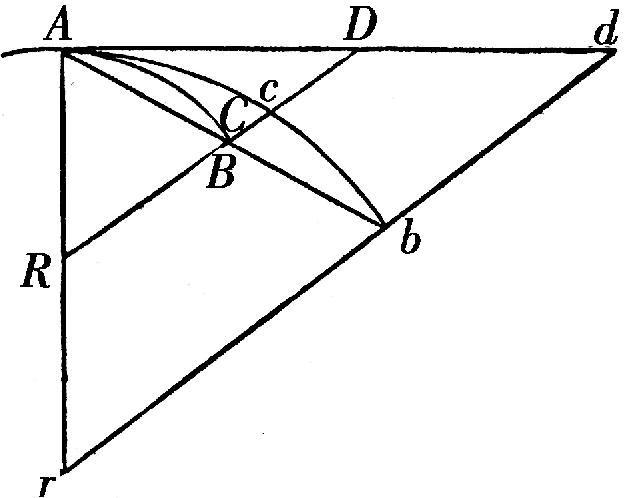
因为当点B靠近点A时，总认为AB，AD，AR延长到在远处的点b，d和r，并引rbd平行于RD，又设弧Acb总相似于弧ACB.然后，假设点A，B重合．角bAd将消失，所以，三个三角形rAb，rAcb，rAd（它们总是有限的）重合，因此之故它们既相似又相等．所以，三角形RAB，RACB，RAD总与这些三角形相似且成比例，它们最终彼此既相似又相等．此即所证．
系理 因此那些三角形，在所有关于最终比的论证中能互相代替．
引理Ⅸ
如果一条直线AE和一条曲线ABC的位置被给定，它们相互截于一个给定的角A，且以另一给定角向那条直线引作为纵标线的BD、CE，它们交曲线于B、C；点B和C一起向点A靠近并在点A相遇．我说：三角形ABD、ACE的面积最终彼此按照边的二次比．
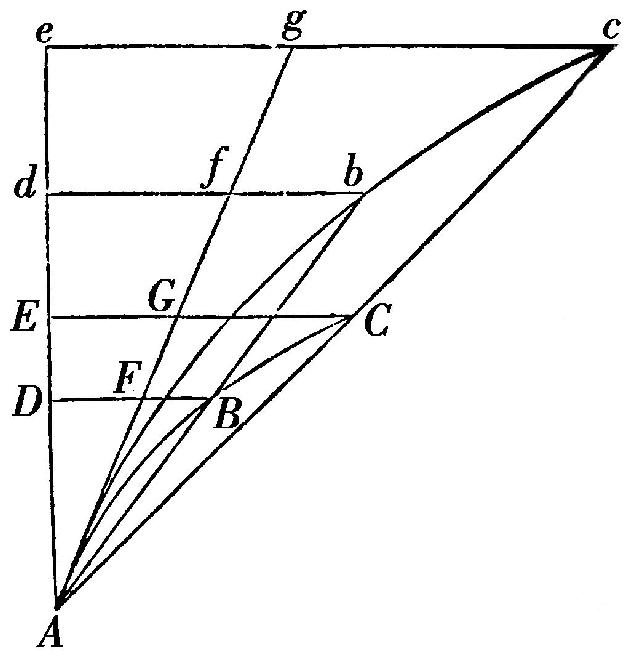
因为，当点B，C靠近点A时，总假设AD延长到在远处的点d和e，使得Ad，Ae与AD，AE成比例，引纵标线db，ec平行于纵标线DB，EC，且交延长的AB，AC于b和c.设曲线Abc相似于曲线ABC，引直线Ag使得它与两曲线在A相切，并截纵标线DB，EC，db，ec于F，G，f，g.然后，保持Ae的长度不变，设点B与C在点A相遇，且角cAg消失，曲线形Abd，Ace的面积将与直线形Afd，Age的面积重合；因此（由引理V）将按照边Ad，Ae的二次比．但是面积ABD，ACE总与这些面积成比例，且边AD，AE总与这些边成比例．所以，面积ABD，ACE最终按照边AD，AE的二次比．此即所证．
引理Ⅹ
空间，它由受到一任意有限力推动的一个物体画出，无论那个力是确定的和不变的，或者持续增加或者持续减小，在运动刚开始时按照时间的二次比．
设时间由线AD，AE表示，且在这些时间所产生的速度由纵标线DB，EC表示．这些速度在运动刚开始时画出的空间，如同这些纵标线所画出的面积ABD，ACE，这就是，（由引理IX）按照时间AD，AE的二次比．此即所证．
系理1 因此容易推知，当物体在成比例的时间画出相似图形的相似部分时的误差，很近似地如同产生它们的时间的平方；如果这样，这些误差由任意相等的力类似地用于这些物体上产生，由物体离开相似图形的那些位置度量，同样的物体在没有这些力作用时在成比例的时间到达那些位置．
系理2 但是误差，它们由成比例的力类似地用于在相似图形的相似部分上的物体产生，如同力与时间的平方的联合．
系理3 同样可以知道，物体在不同的力推动下所画出的任意的空间．它们当运动刚开始时，如同力与时间的平方的联合．
系理4 因此，当运动刚开始时，力与［物体］所画出的空间成正比且与时间的平方成反比．
系理5 又，时间的平方与［物体］所画出的空间成正比且与力成反比．
解释
如果不同种类的不定量彼此比较，并且说其中的某一个与任意另一个成正比或反比，意思是，或者前者与后者按相同的比增加或减小，或与后者的倒数按相同的比增加或减小．如果说其中的一个与另外两个或多个成正比或反比，意思是，第一个按照一个比增加或减小，它由后者中某个的或者另一个的倒数的增大或减小的比复合而成．如果说A与B成正比又与C成正比又与D成反比，意思是，A按照与
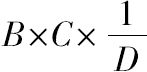
同样的比增加或减小，这也就是，A与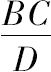
的相互之比为给定的比．引理Ⅺ
在切点具有有限曲率的所有曲线中，切角消失时的对边，最终按照弧毗连的对边的二次比．
情形1.设AB为那条弧，其切线为AD，切角的对边BD垂直于切线，该弧的对边为AB.引BG垂直于这个对边AB，AG垂直于切线AD，它们交于G；然后设点D，B，G靠近点d，b，g，再设J为当点D，B最终到达A时直线BG，AG的交点．显然距离GJ能小于任意指派的距离．又（由穿过点A、B、G，A、b、g的圆的性质）AB2=AG×BD，且Ab2=Ag×bd；由此AB2比Ab2之比由来自AG比Ag与BD比bd的比复合而成．但因GJ能取得小于任意指派的长度，使得AG比Ag之比能成为与等量之比的差异小于任意给定的差的比，因此，AB2比Ab2之比与BD比bd之比的差异小于任意给定的差．所以，由引理Ⅰ，AB2比Ab2的最终比与BD比bd的最终比相同．此即所证．
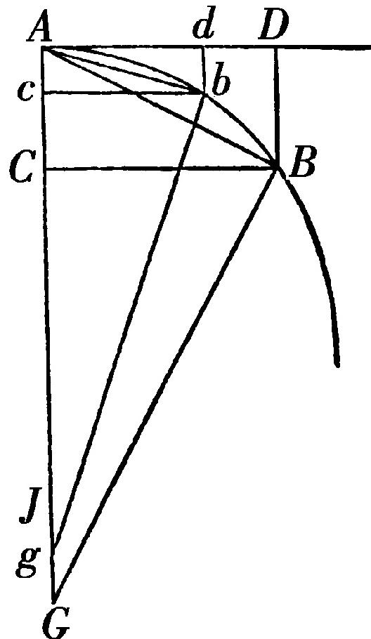
情形2.现在，设BD以任意给定的角向AD倾斜，则BD比bd的最终比总与前者相同，因此与AB2比Ab2相同．此即所证．
情形3.如果我们假设角D没有被给定，但直线BD往给定的一个点汇聚，或按任意其他的规则确定；毕竟角D、d按相同的规则确定，总倾向于相等且比任意给定的差更加靠近，由此由引理Ⅰ它们最终相等，所以直线BD、bd的彼此之比与前面一样．此即所证．
系理1 由于切线AD、Ad，弧AB、Ab以及它们的正弦BC、bc最终等于弦AB、Ab；它们的平方最终同样如同［切角的］对边BD、bd.
系理2 它们的平方最终也如同弧的矢，它们平分弦并汇聚于一给定的点．因为那些矢如同［切角的］对边BD、bd.
系理3 因此，矢按照时间的二次比，在此期间物体以一个给定的速度画出弧．
系理4 直线三角形ADB、Adb最终按照边AD、Ad的三次比，且按照边DB、db的二分之三次比；由于［这些三角形］按照边AD比DB，Ad比db的复合比．所以，三角形ABC和Abc最终按照边BC、bc的三次比．我说的二分之三次比是三次比的平方根，即是来自简单比和［它的］二分之一次比的复合．
系理5 因为DB、db最终平行并按照直线AD、Ad的二次比，最终曲线形ADB、Adb的面积（由抛物线的性质）是直线三角形ADB、ADb面积的三分之二；且弓形AB、Ab是同样的三角形的三分之一．并且这些［曲边形的］面积及这些弓形既按照切线AD、Ad的三次比；又按照弦和弧AB、Ab的三次比．
解释
然而，我们一直假设切角既不无限地大于也不无限地小于包含于圆和它们的切线的切角；这就是，在点A的曲率既不是无穷小又不是无穷大，或者间隔AJ的长短是有限的．因DB可取为如同AD3：在此情形过点A不能画出在切线AD和曲线AB之间的圆，因此切角无限地小于圆的切角．由类似的论证，如果DB相继取得如同AD4、AD5、AD6、AD7，等等，我们得到一个无穷延续的切角序列，其中任意后面的切角无限地小于前面的切角，如果DB相继取得如同AD2、
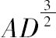
、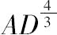
、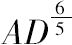
、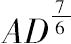
，等等，我们将得到另一切角序列，其中第一个与圆的切角是同类，第二个较圆的切角无限地大，且任意后面的切角较前面的切角无限地大．而且，在这些角中的任意两个之间能插入位于两者之间的，向两个方向延续以至无穷的切角序列．其中任意后面的切角较前面的切角无限地大或者无限地小．如在AD2和AD3项之间插入序列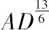
、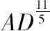
、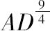
、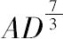
、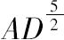
、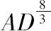
、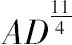
、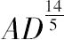
、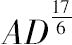
，等等．又，在此序列的任意两个角之间可插入一个新的位于两者之间的角序列，彼此由无穷多的间隔区分．自然可知这没有限度．那些关于曲线及关于它们所包围的面的证明，容易用于立体曲面及立体的容积．先期给出这些引理，是为了避免按古代几何学家的方式，用归谬法导出冗长的证明．确实，由不可分方法证明可得以缩短．但因不可分假设过于粗糙，所以那种方法被认为更少几何味；我宁愿此后命题的证明由正消失的量的最终和及最终比以及初生成的量的最初和及最初比导出，亦即，由和及比的极限导出；我给出那些极限尽可能简洁的证明，如预先说的．因为由此得到的结果，同样也可由不可分法得到，现在那些原理已经得到证明，我们利用它们更为稳妥．因此，在此后每当我考虑由小部分构成的量时，或当我用短曲线代替直线时，我不愿它们被理解为不可分量，而愿它们总被理解为正消失的可分量；不要理解为确定的部分的比以及和，而总理解为和以及比的极限，且此类证明的力量总从属于前面引理的方法．
可以提出反对：正消失的量不存在最终比，因为在量消失之前，比不是最终的，在已消失之时，比不再存在．但同样的论证适用于［说明］一个物体到达其运动停止时的特定位置时没有最终速度，因为在物体到达这个位置之前，其速度不是最终速度，当物体到达那里时，不再有速度．但［对此的］回答是容易的：物体的最终速度被理解为，它既不是在物体到达运动最终到达并停止的位置之前的，也不是在它到达那个位置之后的，而是正当它到达时的速度；亦即，物体到达最终位置并停止的那个速度．并且类似地，正消失的量的最终比被理解为不是它们消失之前或消失之后的比，而是它们正消失时的比．同样，初生成的量的最初比是它们被生成时的比．且最初和最终的和是它们正当开始和终止（或者增加或者减小）的和．存在一个极限，在运动之终可以达到，但不能超过．这就是最终速度．这对所有刚出现和将要终止的量和比的极限是一样的．又因为这个极限是一定的且有界限，确定它是真正的几何学问题．在确定和证明其他几何学问题时，可以合法地应用［古典］几何学中的一切．
也可能［这样提出］反对，如果正消失的量的最终比给定，它们最终的大小亦被给定，因此所有量由不可分量构成，这与欧几里得在他的《几何》第十卷论不可通约量中证明的真理相反．但这种反对依赖一个错误的假设．那些最终比，随着它们量的消失，实际上不是最终量的比，而是无限减小的量的比持续靠近的极限，它们能比任意给定的差更加接近，但在量被减小以至无穷之前它们既不能超过，也不能达到［此极限］．这种事情用无穷大能被更清楚地理解．如果两个量，它们的差给定并被增加以至无穷，它们的最终比被给定，即为等量之比，但给出此比的最终的量或最大的量并没有被给定．为了使后面的内容易于理解，我所说的极小的量或正消失的量或最终的量，不要理解为大小确定的量，而总要意识到是无限减小的量．
（赵振江 译）